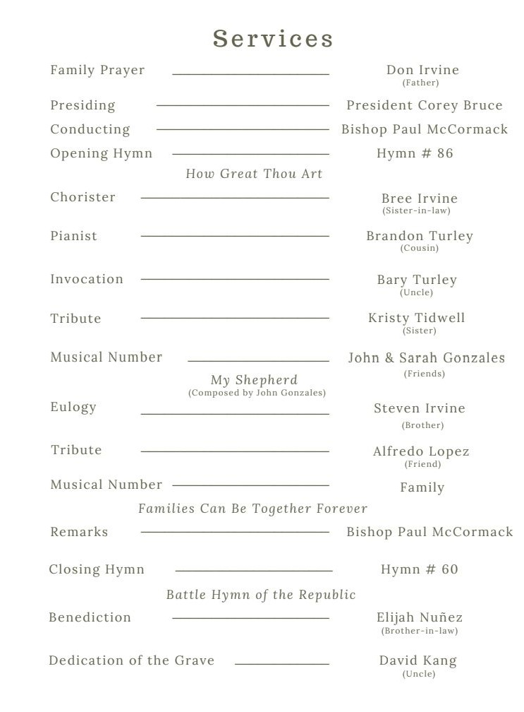

| Time | Program | Person |
|---|---|---|
| 0:00 | Welcome | Bishop McCormack |
| 0:50 | How Great Thou Art | Congregation |
| 5:40 | Opening Prayer | Bary Turley |
| 8:15 | Tribute | Kristy Tidwell |
| 20:15 | My Shepherd | Gonzales |
| 24:30 | Tribute | Steven Irvine |
| 36:00 | Tribute | Alfredo Lopez |
| 51:30 | Families Can be Together | Family |
| 54:30 | Remarks | Bishop McCormack |
| 1:05:15 | Battle Hymn | Congregation |
| 1:07:35 | Closing Prayer | Elijah Nunez |

Sequence
How Great Thou Art1
- O Lord my God, when I in awesome wonder Consider all the worlds thy hands have made, I see the stars, I hear the rolling thunder, Thy pow’r thru-out the universe displayed;
[Chorus]
Then sings my soul, my Savior God, to thee, How great thou art! How great thou art! Then sings my soul, my Savior God, to thee, How great thou art! How great thou art!
When thru the woods and forest glades I wander, And hear the birds sing sweetly in the trees, When I look down from lofty mountain grandeur And hear the brook and feel the gentle breeze, [Chorus]
And when I think that God, his Son not sparing, Sent him to die, I scarce can take it in, That on the cross, my burden gladly bearing, He bled and died to take away my sin, [Chorus]
When Christ shall come, with shout of acclamation, And take me home, what joy shall fill my heart! Then I shall bow in humble adoration And there proclaim, “My God, how great thou art!” [Chorus]
Families can be Together, Forever2
I have a fam’ly here on earth.
They are so good to me.
I want to share my life with them through all eternity.
[Chorus]
Fam’lies can be together forever
Through Heav’nly Father’s plan.
I always want to be with my own family,
And the Lord has shown me how I can.
The Lord has shown me how I can.
While I am in my early years,
I’ll prepare most carefully,
So I can marry in God’s temple for eternity.
Battle Hymn of the Republic3
Mine eyes have seen the glory Of the coming of the Lord; He is trampling out the vintage Where the grapes of wrath are stored; He hath loosed the fateful lightning Of His terrible swift sword; His truth is marching on.
Chorus
Glory! Glory! Hallelujah! Glory! Glory! Hallelujah! Glory! Glory! Hallelujah! His truth is marching on.
I have seen Him in the watchfires Of a hundred circling camps They have builded Him an altar In the evening dews and damps; I can read His righteous sentence By the dim and flaring lamps; His day is marching on.
Chorus Glory! Glory! Hallelujah! Glory! Glory! Hallelujah! Glory! Glory! Hallelujah! His truth is marching on.
He has sounded forth the trumpet That shall never call retreat; He is sifting out the hearts of men Before His judgement seat; Oh, be swift, my soul, to answer Him; Be jubilant, my feet; Our God is marching on.
Chorus Glory! Glory! Hallelujah! Glory! Glory! Hallelujah! Glory! Glory! Hallelujah! His truth is marching on.
In the beauty of the lilies Christ was born across the sea, With a glory in His bosom That transfigures you and me; As He died to make men holy, Let us die to make men free; While God is marching on.
Chorus Glory! Glory! Hallelujah! Glory! Glory! Hallelujah! Glory! Glory! Hallelujah! His truth is marching on.
These files contains audio, may need to adjust volume accordingly. Also note that the recording of hymns have less fidelity than the recording of speakers.
Audio Recording
Video Recording
Transcript
Bishop McCormack
Brothers and Sisters, family and friends.
Welcome to the Camelview Ward and a celebration of the life of Spencer Irvine.
My name is Bishop McCormack and presiding at this service is President Bruce from the stake presidency. And he has asked me to conduct.
A warm thank you to Brandon Turley for playing the piano and to Bree Irvine. She’ll be conducting the music.
We’ll begin this service by saying hymn number #86, How Great Thou Art. Following we will have our opening prayer by Barry Turley.
Opening Prayer - Bary Turley
Our Father in Heaven.
We are grateful for this opportunity. We have to come and celebrate, the life of Spencer Irvine.
We’re grateful for the opportunity that we’ve had to be a part of his life. To feel of his spirit and to feel of his love.
We ask thee to, please bless us that we may be able to. Have thy peace and comfort with us as we strive to reconcile this tragic passing.
Please help us to, use it as a catalyst to. Become better. Better families,individuals and more Christ like – as Spencer was.
We are grateful for the many blessings that Thou gives us for the gospel, For the Knowledge and comfort that we will one day be able to. See and be With him again, and
We say these things humbly in the name of Jesus Christ, Amen.
Bishop McCormack
We have a few speakers this morning.
First, the tribute to Spencer by his sister, Kristy Tidwell.
We will then pause to hear John and Sarah Gonzales singing my shepherd.
Following the musical number, a eulogy will be given by Steven Irvine. Following Stephen, Alfredo Lopez, (Spencer’s friend), will say a few words.
Kristy Irvine
My hope and prayer today is that the the spirit can be with me.
To help me get through this.
It took a long time for me to think about how I could give Spencer, a proper tribute to, who he was.
My dear brother Spencer left this mortality too soon, but not without making his mark in this world.
He lived his life in accordance with the principles that he knew to be true and aligned his life with the will of our savior Jesus Christ.
I think that it can be said of him, that like Nephi
I glory in plainness,
I glory in truth, I glory in my Jesus, for he hath redeemed my soul.
Spencer loved the Gospel of Jesus Christ and embodied it, and in all that he did. Even as a child, he could recognize true principles and devoted his life to the savior and our Heavenly Father.
He was a black and white kind of guy. He could see right. And he knew when things were wrong.
One of my favorite things that we talked about this week was, that even in preschool, when he was interviewed for a new story about missing school, he told the reporter that he missed school because he wanted to play.
And those were facts.
There’s a small section of a talk given by Michelle Craig that I would like to read because we can insert Spencer’s name into it and see him in it, she says.
“When hard times come, I try to remember that I chose to follow Christ before I came to Earth and that challenges to my faith, my health and my endurance are all part of the reason I’m here.
And I certainly should never think that today’s trial calls into question God’s love for me or let it turn my faith in him into doubt.
Trials do not mean that the plan is failing.
They are part of the plan, meant to help me seek God.
I become more like him when I endure patiently and hopefully like him when in agony.
I pray more earnestly.
Jesus Christ was the perfect example of loving our father with all his heart, of doing his will and regardless of the cost, I want to follow his his example by doing the same”
Spencer embodied so many Christ-like attributes throughout his short time here on Earth.
He was full of faith in Jesus Christ.
He fully accepted him as his personal Savior and Redeemer, and looked to Him in all things.
In Preach My Gospel, which is a guide for all members of the Church of Jesus Christ of Latter-day Saints.
It says that faith leads to action, and when you have faith in Jesus Christ, you accomplish what the Lord wants you to accomplish. And you help bring about good in your own life and the lives of others.
Spencer was always doing good in his life. He served others.
He remembered birthdays. He apologized for not remembering birthdays.
And he was always one to help when needed. Spencer was full of hope. He hoped for a better future for himself and Meg, and always look forward, not back.
He was patient, optimistic and persevered through his multiple surgeries, injuries, his recent diagnosis.
And in every trial that he faced, his eye was fixed firmly upon the Savior.
President James E Faust taught, hope is the anchor of our souls.
Spencer lived his life full of hope.
A man once asked Jesus which is the great commandment in the law.
Jesus replied,
Thou shalt love the Lord thy God with all thy heart, and with all thy soul, and with all thy mind. This is the first and great commandment, and the second is like unto it. Thou shalt love thy neighbor as thyself.
Spencer did this his entire life.
He put the Lord first.
His friends knew what he stood for and what he wouldn’t say or do.
Spencer listened to those around him and loved them unconditionally.
He served a full time mission in California, and his letters were always full of love for those around him.
Whenever I would text Spencer, he was quick to offer a kind word.
He supported me with love and was slow to anger.
His life was a life of charity, the pure love of Christ was part of who he was.
Spencer was a true disciple of Christ.
Elder De Feo. said in a talk entitled Pure Love, the true sign of every disciple of Jesus Christ said4.
True disciples love to submit themselves to the Lord with peace in their heart. They are humble and submissive because they love him. They have faith to fully accept his will, not only in what he does, but also in how and when.
True disciples know that the real blessings are not always what they want, but rather what the Lord wants for them.
His humility and willingness to submit to the will of The Lord was and is inspiring.
Spencer went through periods of unemployment which to us is very disappointing and many when faced with this challenge can become despondent and even quick to anger with the Lord for not helping answer prayers for good employment.
Spencer did everything that he could to provide for himself and Meg, even taking jobs that were not equal to his education or talents.
But they were jobs that would allow him to provide. His humility and submission to the Lord, yielded great results with a job that Spencer truly loved.
Elder De Feo also said pure love is the true sign of every true disciple of Jesus Christ.
I’m sure many of you have memories of Spencer embodying this statement. His love was pure, it was unfettered from judgment and hostility.
He was a happy person who loved unconditionally.
He laughed with so many, he welcomed all.
He threw himself into youth activities and was always the first to offer a smile, tell a good joke and ask if anyone needed help.
Spencer loved his family.
He devoted his time to his sweetheart, Meg, and gave her everything that he could offer and the circumstances that they lived in.
He loved everything about his nieces and nephews.
And would gush over their photos and celebrate their accomplishments and encourage them when I would tell him of a struggle in their life.
In closing, I want to share a few thoughts on the resurrection. As we look to that day with longing and hope of seeing our dear Spencer again
The following is taken from a talk called Sunday Will Come, by Elder Wirthlin5.
President Joseph F. Smith said “that those from whom we have to part here, we will meet again and see as they are. We will meet the same identical being that we associated with here in the flesh.”
President Spencer W. Kimball amplified this when he said, “I am sure that if we can imagine ourselves at our very best, physically, mentally, spiritually, that is the way we will come back.”
“When Christ rose from the grave, becoming the first fruits of the Resurrection, He made that gift available to all. And with that sublime act, He softened the devastating, consuming sorrow that gnaws at the souls of those who have lost precious loved ones.
I think of how dark that Friday was when Christ was lifted up on the cross.
On that terrible Friday the earth shook and grew dark. Frightful storms lashed at the earth.
Those evil men who sought His life rejoiced. Now that Jesus was no more, surely those who followed Him would disperse. On that day they stood triumphant.
On that day the veil of the temple was rent in twain.
Mary Magdalene and Mary, the mother of Jesus, were both overcome with grief and despair. The superb man they had loved and honored hung lifeless upon the cross.
On that Friday the Apostles were devastated. Jesus, their Savior—the man who had walked on water and raised the dead—was Himself at the mercy of wicked men. They watched helplessly as He was overcome by His enemies.
On that Friday the Savior of mankind was humiliated and bruised, abused and reviled.
It was a Friday filled with devastating, consuming sorrow that gnawed at the souls of those who loved and honored the Son of God.
I think that of all the days since the beginning of this world’s history, that Friday was the darkest.
But the doom of that day did not endure.
The despair did not linger because on Sunday, the resurrected Lord burst the bonds of death. He ascended from the grave and appeared gloriously triumphant as the Savior of all mankind.
And in an instant the eyes that had been filled with ever-flowing tears dried. The lips that had whispered prayers of distress and grief now filled the air with wondrous praise, for Jesus the Christ, the Son of the living God, stood before them as the first fruits of the Resurrection, the proof that death is merely the beginning of a new and wondrous existence.
Each of us will have our own Fridays—those days when the universe itself seems shattered and the shards of our world lie littered about us in pieces. We all will experience those broken times when it seems we can never be put together again. We will all have our Fridays.
But I testify to you in the name of the One who conquered death—Sunday will come. In the darkness of our sorrow, Sunday will come.
No matter our desperation, no matter our grief, Sunday will come. In this life or the next, Sunday will come.”
My hope is that as Spencer passed through the veil, he could he could hear the words of Paul in his mind.
The time in my departure is at hand. I have fought a good fight. I have finished my course. I have kept the faith.
May we all remember our dear friend Spencer and the compass that he used to guide his life, the Savior, Jesus Christ.
May we take the example that Spencer set for us and following the Savior that we may invite the Savior more fully into our lives and willingly give our shortcomings to him that he may help us be perfect in Him.
My testimony is that Sunday will come that glorious day when we will be reunited with those we love and rejoice in the great gift that the Savior has given us through his sacrifice in the name of Jesus Christ, Amen.
Steven Irvine
Spencer was a special person.
As you heard from Kristy, he was the most Christ like.
Kind, caring, loving person that I know.
He was the best older brother. He was the best friend. And the best example, that I could have.
This week has been a week of reflection for me
I tried to figure out and appreciate how much my life was influenced by my older brother and the 31 years that I was able to spend with him.
I realized I attribute so much of who I am to who he was And how much I wanted to be like him.
Growing up, I shared a room with him and we always talked before going to bed in our little bunk beds.
All of my hobbies, all of my knowledge came from his influence. And because he loved history and civil war, so I know about Antietam and Gettysburg Because he was so obsessed with those things and we’d go on these trips over to Virginia and have fun as a family.
Because that’s what Spencer loved. I just wanted to be there with him and I wanted to learn about these that he loved.
My love for all sports comes from his nerdiness.
All thosee stats that he knew and I’m going to miss texting
hey, what do you think about this guy
And he would text me back all these stats.
That’s just who he was.
He was so loving and knowledgeable. He just gave everything his all, I always wanted to follow in his footsteps.
I wanted to be the college football fan that could talk football with my brother. I wanted to play the video games, growing up with my brother and my sister, and have fun playing Mario Kart with them.
I just wanted to be him.
That’s what what I’ve realized over this last week. I really wanted to be my brother.
Because he just set such a good example for me.
How to be man How to be an adult. How to be a spouse.
Because he adored Meg and he treated her like a queen. And I thought to myself one day I want to love somebody like that because I saw how much he loved her.
He was everything I could ask for from an older brother. He was truly the best example. He had the best laugh, even though it was a little too loud.
We all loved it.
You can read all the hundreds of Facebook comments about him and his contagious laughter, with his big smile and how it just came out of his chest.
And you knew exactly where he was at all times.
He had so much fun with everything that he did and he just loved life so much.
And there’s a word that I was thinking of. How do I how do I explain who Spencer was? To somebody who didn’t know my older brother.
The word is Vigor. And that’s just how Spencer lived.
He lived with so much vigor, he loved life, he loved everybody.
He was everybody’s best friend. He talked to people on the airplane. Who does that? But that was Spencer.
He was everybody’s best friend. He always had a smile on his face.
If you look at any of those pictures, you knew he was a happy person. And he was so Christ like.
He was so loving. He was so caring. And it’s just as my sister said. He leaves such a big hole in our family.
And now, as I try to compare myself to him,
He would call my parents out of the blue to check up on them.
I call my parents to get something from them, or ask them a question. But Spencer cared about how my dad’s day was going. While I was like,
oh, I could call my dad today, I guess, but…
He just he loved them so much and he was just such a good son.
He was my dad’s best friend. He always thought about them. He always thought about other people, even when he was sick last Wednesday.
Out of the blue, he called me – four times. I thought this was strange.
I was working and I missed the calls. I thought it was weird that he called me four times and he left me a voicemail.
And the voicemail starts off with.
Love you little bro. Thank you so much for praying for us and all the support.
And then he ends it with
love you so much. Take care, Steven.
And I didn’t at the time, I didn’t think much of it Because well, we will have time with him. But, why did he call me? On a Wednesday during a work day.
Why did he feel like he had to call me so many times and I ended up calling him back and we had a really great chat for 45 minutes.
That was the last time I spoke to him.
But he knew somehow that he needed to leave me this message that I’m going to cherish for the rest of my life.
He knew that he needed to call me then because he wasn’t going to have an opportunity again.
He knew that he just needed to talk to me. Somehow some way Spencer knew.
Despite feeling low, despite being bloated and having pain and being on painkillers. Knowing that there was a very grim prognosis for him, he called me in the middle of the week, last Wednesday.
To tell me that he loved me.
Because that’s just who he was.
I couldn’t imagine my life without him.
No matter what I did, he was always the prouder, older brother.
Even when he was unemployed and struggling and really challenged. I got a job and I started moving up the ladder and he was always so proud of me.
And looking back
If I were in his shoes, I’d be thinking,
what a little punk. Why does he get a job. How is he doing this and I’m not? I have the master’s degree.
There would be so many things going through my mind of how I would have reacted to these negative situations.
But Spencer didn’t.
Every time I texted him, he was always so proud of me. He was always so happy for me.
I don’t know how I would have reacted to all that. I don’t know how I would have been non judgmental. Or not angry? At all of these circumstances that happened to me.
But no matter what, he was just such a trooper. He was always so positive in the middle of all. Whether his diagnosis or Doctor visits, he would call me and tell me.
You know what? I’m going to beat this thing. I’m going to stay positive. I’m going to do it. And we’re going to beat it.
He had so much hope. And so much love.
I remember one of the last things he told me on that Wednesday.
How amazing our family has been for him. How much support his friends and family have given him all across the world. How amazing his wife was for doing everything for him, taking him to the ER all those times and bearing that burden with him.
As I look throughout the years and I think of how amazing of an older brother he was.
Every situation that I would have reacted negatively, he reacted positively.
Every person that he met, he left with a good impression When I probably would have been judgmental.
He was a better man.
He was so positive. So Christ like So loving.
He set a good example for me, despite everything that he faced. He was always encouraging me, always trying to teach me and be the supportive older brother that he knew that he needed to be.
And last Saturday, before we came down to Arizona on Sunday, for the first time in years, I watched college football in our basement.
I said to myself,
Wow, this would be really fun if Spencer gets his chemo treatment and he feels good enough, one day I’ll fly him up here so we can have another college football Saturday that we used to have growing up.
I felt a little bit of Spencer next to me. Looking back at it, it feels very surreal that I almost felt like I had him with me. For that one day, the day before he passed, I decided to watch college football. That I decided to do that one thing that he loves so much doing with me.
And I felt him and that a little part of him was there with me I will cherish that moment for the rest of my life.
I love my brother so much.
He’s such a good example to me. He was the most Christlike person that I know. And I will miss him dearly.
And I want to close this with my testimony. I know that I’m going to see him again. And I can’t wait to see him and get one of those big bear hugs that he always gives.
Because I’m already missing those.
I know that he’s watching over us. And I know that the plan of salvation is real and I can’t wait to see him again.
I say that in the name of Jesus Christ.
Alfredo Lopez
Good morning. My name is Alfredo and like all of you, I had the privilege of calling Spencer, my friend.
I want to give a tribute to Spencer and tell you all the amazing adventures that we went on.
I really don’t remember my life Without Spencer.
When my family moved to the United States from Lima, Peru. Spencer was literally one of my first friends.
So I literally don’t remember much at all the adventures we’ve been on while Spencer being there with me, - or me calling him, - or reaching out to him, - or sending him pictures, - or him sending me pictures back, - or something awesome that we were doing.
We we went to middle school together. We went to Argon Middle school. And we have a social studies class together.
And I was still learning English. And island is spelled ISLAND, right?
The S is silent. So you say island. And I was in the class and I said Iceland because I pronounce the S because in Spanish you pronounce all the letters.
Spencer was like.
No, no, don’t say it like that,
I’m like, why not? Are you sure that doesn’t sound right?
But and then I told the teacher, I asked her about the Iceland. And she said, we’re talking about Islands
I was like, Oh.
That was my relationship with Spencer.
I called Spencer my personal political adviser.
Whenever I needed something or I needed to know something.
What’s going on?
I always call Spencer or text him.
I’ll say,
Hey Spencer. What is going on with this cause? He already knew about it, had done all the research on it and so he gave me all the information.
He gave me the Cliff notes as well. And it was amazing.
Spencer was also my mentor – always.
I was conflicted whether or not to wear my service uniform today. But I’m wearing it, to honor Spencer.
10 years ago I enlist in the Marine Corps. I now serve in the army. When I was going through the process of which branch to join, who do you think I was calling?
I was calling Spencer. Because he knew all about the branches and what was going on with each one of them.
So when I went to see the Air Force recruiters, right after that, I called Spencer.
When I went to see the Navy recruiters, then I called Spencer.
But not with the Army recruitors, since I didn’t want anything to do with the army.
But here I am.
And then, I went to see the Marines recruiters, and I called Spencer.
He was like,
yeah, you should do that one I think would be great.
And it was terrible. It really was.
The training was horrible.
But I stuck through it. And when I graduated, the recruit training in San Diego. I called Spencer.
I said, hey, man, I did it because of you
Spencer and I, we grew up in what I now I’m calling The Fabulous 5.
Our fearless leader, our Captain Moroni, was Spencer.
He was our righteous leader.
From the moment we were deacons, he was a deacons president. And we knew that we had to follow Spencer because he was always ready to do the right thing no matter what it was. And he motivated us all to do it.
Part of this gang was also Danny B., Michael S., Brandon R. and myself. Now the five of us we grew up together since we were 12, all he way to our missions and then we moved on with our lives
But during these formative years and our teenage years, looking back, Spencer was our rock.
He was so diligent, so smart.
I was talking to Michael and he told me that he wanted to be a student like Spencer.
So he started meet up with Spencer to do his homework together because Spencer was a very serious student.
One thing about Spencer was his dilligence, he was amazing, I admire him for that.
But then Michael started to kind of corrupt Spencer.
He would say,
hey, Spencer instead of doing homework, what if we played on the Xbox. Let’s go play some Battlefront
And Spencer would respond,
No, we gotta do homework, man.
But Spencer was so nice, so he would crack down a few times. But then he was like, no, this isn’t right.
We’re not doing this.
Spencer wasa really kind person and absolutely amazing.
But on the sports field he had no mercy.
I hated to play against him any sport, whether it was soccer, football, basketball.
Because as sweet as Spencer is.
Oh my goodness. On the sports field he became a warrior.
I ran so fast as to not get tackled by him.
For every Turkey Bowl, I always make sure I was on Spencer team. Because I didn’t want him chasing me down.
And it was awesome to see when he joined the high school football team. He loved it and it was great.
And I was so glad he was there because he was so tough.
I like to consider myself tough, but no Spencer is tough, so much tougher than me.
Then Spencer served mission in California and he learned that language de los ceielos
The tongue of the heavens.
And when he came back and we met up after our missions.
It was a brand new world of our friendship, because now I still got Spencer, but we could also talk to the senoritas.
I would say,
let’s go down some machaca and salsa,
And Spencer was always down.
He was like,
OK, let’s go.
So, Spencer, we’re gonna be coming home at 6:00 in the morning.
He would say,
Alright, let’s do it.
You know, we took care of each other.
It was so beautiful to see how he now could communicate with my parents in a whole different way.
Growing up with Spencer and the Irvines, they were our families as well.
And Spencer was so excited, I could see that excitement in his face when he first talked to my mom in Spanish.
And his Spanish was amazing. You know, it was LA Spanish, which, we forgave him for that. But it was still amazing.
And he would come and ask my mom for the recipes for Arroz con pollo and Huancaina, which are some Peruvian dishes, and he loved them.
Spencer was always at the weddings of my family He was there when my sister got married. Also when I got married.
It was just awesome.
Because Spencer was my rock. He was also full of love. And so humble.
This was during one of our many, mMany camping trips with the scouts.
For some reason I didn’t have any warm gear and I was freezing.
Spencer noticed that
Hey man, here, take my coat.
I was like,
no, no, you’re gonna need it because it was really cold.
I think wewre in mountains in western Maryland, Sugarloaf Mountains, and we spent all night trading the coat because I was freezing and he was freezing
But you know, we got some sleep.
He took care of me and I tried to take care of him.
Since then, we grew into our 30s and moved on with our lives.
I would, from time to time, would still check in with Spencer.
In the fall of 2021, I got assigned to be deployed to Eastern Europe for a year.
It said on my assignment, Kosovo and I was like, where is that?
So I made three phone calls.
The first one was my wife,
I’m getting deployed. I’m leaving for a little bit.
Then my parents, to let them know.
Then Spencer, I was like,
Spencer, what do you know about this place?
and he already knew all about it.
And I was like,
Amazing.
He was my Intel guy to the Intel officer.
It was awesome, and even when I was gone, I would ask,
hey, Spencer, what’s going on here
He would respond,
let me. Look up. I’ll get back to you.
So now, I don’t have that Intel guy anymore.
For now.
Because I know I will see him again.
Last Friday, my brother texted me and said,
hey, I think Spencer is sick.
I said,
oh, let me hit him up, see what’s going on.
So last Saturday I called him.
Hey, Spencer, I heard you aren’t feeling well.
And he filled me in
And I told Spencer.
You have to beat this thing.
Because he had to meet my son, Levi Lopez. He was born 3 weeks ago.
Spencer said,
YES ~ I’m going to do this.
As Kristy and Steven said, Spencer was extremely positive.
The most positive person I’ve met.
’Cause I’m gonna beat this thing and overcome.
And I said, perfect.
When you come back out to Maryland, I’m gonna kidnap you. Gonna go down to Virginia. We’re gonna hang out in the Potomac.
It’s gonna be amazing.
He will meet my children. And we will go… We will go on many more adventures.
Because that is what the gospel is all about.
It’s eternal relationships.
Friends are like seasons.
Some come and go, but not Spencer.
He was my rock.
This restored gospel is True. And I love it with all my heart. My testimony was stronger.
Because of Spencer.
I remember the joy in his face when he opened his mission call.
He was going to learn Spanish, he was so pumped about that.
I look forward to seeing my friend again. He is my brother.
Because I know I will because Christ came to the earth and he atoned for our sins. And He knew that Spencer was a faithful disciple of Jesus Christ.
He never wavered. He was one of the best examples for me.
I called my dad and asked him how I should organized some of my thoughts today.
He replied with this.
You can cry because he’s gone. Or
You can smile because of the amazing life that he lived.
You can close your eyes and pray that he will come back right now. Or
You could open your eyes and look at everything that he did that he left behind.
Your heart is void because he’s not here anymore. Or it could be full of joy because the good times you had with him.
You could cry. You could close your mind and feel the emptiness and turn around.
Or you could do what he would have wanted you to do.
Which is to smile. Open your eyes and love. And endure to the end.
And so that’s what I’m going to do. I’m going to smile and honor my friend.
And remember all the great times we had.
I’m going to love. I’m going to talk to people on airplanes.
I’m going to be more attentive.
I’m going to love deeply.
Because that’s what Spencer did. That is what I’m going to do — `till the end.
Because the only explanation that I have is this, that Heavenly Father needed Spencer. By His side.
Because that is how amazing he is. So I have to get there too
I have to live this gospel and under the eternal covenants that we have with Heavenly Father.
I’m so grateful to have the privilege to have spent my life with him. And for him to be my friend and my brother.
My family loves me so deeply.
Every single one of my siblings. There are six of us in total. We all have unique experiences with Spencer.
We all love him so much.
There isn’t a picture from our teenage years that are without Spencer in it.
I know that this gospel is true. The Church of Jesus Christ of Latter Day Saints is the only true church on this earth.
Spencer knew it too.
And he shared that message with everyone he met in California.
That was his mission.
And so thankful for all of you, and for your support.
And I say all these things. In the name of our savior, Jesus Christ, Amen.
Bishop McCormack
Two favorite songs that all primary children sing.
I'm a child of God and Families Can Be Together Forever.
Tw0 basic truths of the gospel.
Thank you to all family and friends for their beautiful messages and music this morning.
The Spirit was felt here in this Chapel.
If I can ask you to please take your hymnal out and turn to the hymn #86 that we sang this morning. (See Section 0.2)
This hymn was not written by Emma Smith or one of the members of the past as the majority of songs in this book were.
We adopted this hymn because it brings to the focus, the fundamental plan of happiness, the main theme in the Book of Mormon.
In the first verse, the prominent section gives God, the glory for creating a world where we could come to gain the experience we need to grow up.
We need to grow up to be like our Heavenly Father.
Please turn your attention to the next verse, which brings us to the experience. the wonders of this earth. And the joy within
In Galatians 5:22 and 23 , it reads.
But the fruit of the Spirit is love, joy, peace, longsuffering, gentleness, goodness, faith, meekness, temperance: against such there is no law.
That’s what Spencer represented.
We are here to be happy.
Joseph Smith said.
It is the the design of our existence.
Now, as with all things, there needs to be an opposite. If not, we could not grow or have the agency to choose and make decisions for ourselves without depending on others to make them for us.
To be forced without agency is evil, and this is what the adversary wants. And since we are imperfect and expected to be imperfect, our Father’s Plan is to send His Son, His only begotten to redeem us from our imperfection, or save us from our mistakes.
In the third verse is the one that tears at me. It’s the one that when I ponder it, there’s something. There’s someone who loves me so much that would sacrifice Himself to go through such terrible experiences in the Garden of Gethsemane so that he can know my experiences of pain.
Through this act, in which no one understands how it works. He knows what we feel when someone we love without any fault of their own departs from this earth.
As the verse says. I scarce can take it in.
However, brothers and sisters, there’s hope. Meaning, whether we believe it or not, there comes a time when the Savior will return to embrace and congratulate us.
For, as we say in our faith, endure to the end.
Then I shall bow in humble adoration. And there proclaim my God. How great thou art.
In 2 Nephi 4, Lehi blesses his posterity and passes away.
In reading Nephi’s words, Nephi seem initially and understandably, to have a difficult time with his father’s passing.
In verse 13, Nephi stated that his brothers, Laman and Lemuel were angry with him.
Can you imagine the scenario of all the trials that Nephi had gone through because of his brothers?
And then on top of all of that, the Lord said,
Don’t Nephi. You are not allowed to say anymore to them.
For the next few verses, Nephi remembers all that the Lord has done for him.
He remembers this because there was a choice he had to make.
He’s been through many afflictions and remember he’s grieving or mourning his father’s death.
This is what he said in verse 27.
And why should I yield to sin, because of my flesh? Yea, why should I give way to temptations, that the evil one have place in my heart to destroy my peace and afflict my soul? Why am I angry because of mine enemy?
He’s Speaking of Laman and Lemuel.
Awake, my soul! No longer droop in sin. Rejoice, O my heart, and give place no more for the enemy of my soul.
Do not anger again because of mine enemies. Do not slacken my strength because of mine afflictions.
I ask you to please read the last five verses of the end of Nephi Chapter 4. Nephi pulls himself together and teaches us how to turn to the Lord to help in times of affliction.
These verses are very personal to him. And if you think of how he’s feeling when he writes these verses. There’s a parallel here with Nephi.
During a very vulnerable time for him after losing his father. And with all of us grieving the loss of Spencer.
In my opinion, Nephi’s personal struggle and passion is more apparent in these verses than in any other of his writings.
In verse 30, it begins with this with this prayer and pleas. I ask you to put yourself in his place. And repeat this prayer in your mind. And Nephi asks that you pray unto the Lord in this manner.
In verse 30.
O Lord, I will praise thee forever; yea, my soul will rejoice in thee, my God, and the rock of my salvation.
O Lord, wilt thou redeem my soul? Wilt thou deliver me out of the hands of mine enemies? Wilt thou make me that I may shake at the appearance of sin?
He continues, in verse 33
O Lord, wilt thou encircle me around in the robe of thy righteousness! O Lord, wilt thou make a way for mine escape before mine enemies! Wilt thou make my path straight before me! Wilt thou not place a stumbling block in my way—but that thou wouldst clear my way before me, and hedge not up my way, but the ways of mine enemy.
O Lord, I have trusted in thee, and I will trust in thee forever. I will not put my trust in the arm of flesh; for I know that cursed is he that putteth his trust in the arm of flesh. Yea, cursed is he that putteth his trust in man or maketh flesh his arm.
Yea, I know that God will give liberally to him that asketh. Yea, my God will give me, if I bask cnot amiss; therefore I will lift up my voice unto thee; yea, I will cry unto thee, my God, the drock of my erighteousness. Behold, my voice shall forever ascend up unto thee, my rock and mine everlasting God. Amen.
I would like to bear in my testimony that I know God lives. He loves us. He sent his Son to redeem us.
I know that Joseph Smith is a prophet of God And he translated the Book of Mormon by the power of God.
I know that the Church of Jesus Christ of Latter-day Saints is the church here on this earth today
And I know that this church is led by a prophet, a living prophet, who receives revelation
Thank you all for being here.
Meg, We love you.
We love your family. Although for a short time, I know that they love you. You have such great support. And it goes without saying that Spencer was such a great guy.
I leave you with a blessing that you will always stay close to the gospel. He’s smiling down and up on us right now.
I know who he is.
And I say these things, in the name of Jesus Christ, Amen.
Closing Prayer - Elijah Nunez
Our dear Heavenly Father. We thank thee for this day that thou hast blessed us with.
For the time that we have now to say goodbye to Spencer in this life. We’re grateful for many years and the time that thou hast blessed us to be with him in this life. And to know him, to love him.
We thank thee for this gospel and for the plan of salvation. We’re grateful for the promise of being able to live and be with our loved ones again.
We ask thee to please bless us this time as we say goodbye. So that we continue to remember, Spencer.
That we’ll be looking for opportunities in our life to love and serve the people around us.
With happiness and kindness.
We asked thee to please continue to bless us all. T0 continue to have the Spirit with us. Help us, to do our best, as we live in this life.
We love thee and say these things in the name of Jesus Christ, Amen.